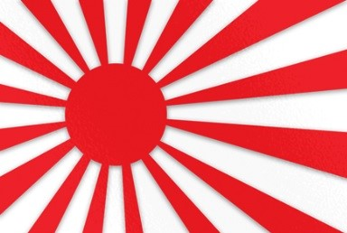

Bandeira imperial do Japão.
Mestre Gichin Funakoshi.
Segunda Guerra Mundial, 1941.
Capitão George Turner.
Johwn Lawrence e John Kreese
Daniel LaRusso e Sr. Miyagi.
Terry Silver e Mike Barnes.
Terry Silver e Daniel LaRusso.
 e Miguel Diaz (ao fundo).")
Johnny Lawrence e Miguel Diaz.
Johnny Lawrence e o sensei do dojô rival, Daniel LaRusso.
ㅤHistória Do Karatê ㅤㅤㅤㅤㅤㅤㅤㅤㅤㅤㅤ[topo]
ㅤㅤO karatê é uma arte marcial japonesa que surgiu na ilha Okinawa. A história do karatê começa quando o monge indiano Bodhidarma caminha da Índia para China querendo fundar um mosteiro budista. Além dos conceitos de contemplação do budismo, Bodhidarma levou uma técnica de luta sem armas, com objetivo de manutenção da saúde e autodefesa, dando início as artes marciais.
ㅤㅤOkinawa pertencia a China durante a dinastia Ming e o intercâmbio cultural foi inevitável. Após o final da dinastia Ming, Okinawa passa a ser dominada pelo Japão. Querendo evitar uma rebelião, os japoneses proíbem o uso de armas de fogo em Okinawa. A população começou a utilizar pés e mãos como forma de defesa, para a população aprender essa arte marcial, os mestres selecionavam os alunos e seus treinos eram secretos. A repressão da elite japonesa era tão grande que foi
comparada com a perseguição a capoeira no Brasil Imperial.
ㅤㅤNo séc. XIX com a liberação do uso de armas de fogo, a história do karatê muda, a partir daí, o karatê começa a ser praticado com enfoque em educação física e fundamentação espiritual , sendo introduzido como educação física em 1905.
ㅤㅤO principal responsável por popularizar o karatê fora de Okinawa foi o mestre Gichin Funakoshi. Em 1916 fez a primeira demonstração pública, na cidade de Kyoto , em 1921 faz uma apresentação para Hirohito (também conhecido como "Imperador Showa"). Em 1923, o mestre Funakoshi se muda para Tóquio com intuito de propagar o karatê no Japão, sempre buscando formar homens como cidadãos úteis a sociedade.
ㅤㅤApós a derrota japonesa na 2ª Guerra Mundial , as forças Norte Americanas dominaram o Japão e proibiram a prática do karatê. Porém, alguns alunos de Funakoshi convenceram que o karatê era um esporte inofensivo, além disso, alguns soldados americanos estavam interessados em aprender aquela nova arte marcial. Assim com a imigração japonesa, o karatê se propagou pelo mundo ganhando adeptos de várias nações do mundo.
ㅤA origem do Cobra Kaiㅤㅤ ㅤㅤㅤㅤㅤ[topo]
ㅤㅤO estilo Cobra Kai teve suas origens na década de 1950 com Kim Sun-Yung, mestre de Tang Soo Do, uma arte marcial coreana advinda do karatê. Ele foi o professor do capitão George Turner, superior de John Kreese durante a guerra do Vietnã. Na guerra, Kreese teve a oportunidade de aprender com o mestre, e após o fim dela, ele e seu amigo Terry Silver continuaram a estudar seus ensinamentos, desenvolvendo o Cobra Kai propriamente dito e abrindo um dojo com o mesmo nome na década de 1970.
ㅤㅤNos anos que se seguiram, Kreese e Silver foram aperfeiçoando sua doutrina, baseada em atacar sem se segurar e nunca demonstrar o menor sinal de compaixão contra seus inimigos. Seus preceitos são simples: “Ataque primeiro. Ataque com força. Sem compaixão”. Com isso, foram conquistando cada vez mais adeptos, até Silver sair de cena e deixar Kreese assumindo tudo. O resto, como dizem, é história.
ㅤEra Kreese ㅤㅤㅤㅤㅤㅤㅤㅤㅤㅤㅤㅤㅤㅤㅤㅤㅤㅤ[topo]ㅤㅤComo um sensei, Kreese instrui seus alunos a não terem misericórdia de seus oponentes.
ㅤㅤEm 1984, o melhor aluno de Kreese, Johnny Lawrence, tem um conflito com Daniel LaRusso. Em resposta, o Sr. Miyagi ensina karatê a Daniel. Quando Daniel e Miyagi vão para o dojô Cobra Kai, Miyagi propõe que Daniel participe do Torneio All Valley Under-18 Karate Championships, onde enfrentará os alunos Cobra Kai e exige que o conflito cesse enquanto Daniel treina. Kreese concorda com a ideia, mas ameaça permitir que seus alunos continuem o assédio se nenhum deles aparecer no torneio. No torneio, Daniel chega às semifinais enquanto Johnny avança para as finais após derrotar um adversário altamente qualificado. Kreese instrui Bobby Brown, um de seus alunos mais compassivos e o menos cruel dos algozes de Daniel, para incapacitar Daniel com um ataque ilegal no joelho. Bobby relutantemente o faz, sendo desqualificado no processo. No entanto, Daniel se recupera e acaba derrotando Johnny, tornando-se o novo campeão.
ㅤEra Silver ㅤㅤㅤㅤㅤㅤㅤㅤㅤㅤㅤㅤㅤㅤㅤㅤㅤㅤ[topo]ㅤㅤQuando John Kreese está falido e sem seu dojô, seu velho amigo Terry Silver o ajuda a se vingar da humilhação que ele sofreu de Daniel LaRusso e Sr. Miyagi, restabelecendo o Cobra Kai. Para isso, seu plano (além dos recursos financeiros) era destruir os dois em um nível emocional, pois Terry Silver sabia que era onde ele poderia causar mais danos ao atacar seu relacionamento e, consequentemente, enfraquecê-los fisicamente.
ㅤㅤComo parte do plano, temos a aparição de Mike Barnes para intimidar Daniel LaRusso a defender seu título no torneio de karatê em 1985. Daniel se sentiu inseguro e, por isso, acaba procurando ajuda de Silver – que se tornou seu novo sensei. Mas as coisas não sairam como o jovem esperado, com Terry Silver torturando Daniel fisicamente e emocionalmente, além de tentar corrompê-lo. Depois de enfrentar todos esses problemas, Daniel consegue escapar de sua influência e ainda derrota Barnes.
ㅤㅤTerry Silver queria humilhar Daniel e fazer Cobra Kai recuperar seu prestígio, mas não conseguiu – apesar de causar danos emocionais profundos no protagonista, que precisou de algum tempo para se recuperar de suas consequências.
ㅤEra Johnny ㅤㅤㅤㅤㅤㅤㅤㅤㅤㅤㅤㅤㅤㅤㅤㅤㅤ[topo]ㅤㅤVivendo sozinho e tendo problemas com álcool, Johnny conhece um jovem chamado Miguel Diaz, que sofre bullying dos valentões do seu ensino médio. Inicialmente, Lawrence não liga para a situação, até que uma briga acontece em cima de seu carro e ele dá uma lição nos valentões. A partir de então, Miguel se sente inspirado por Johnny e quer aprender a se defender sozinho.
ㅤㅤQuando Johnny decide reabrir o Cobra Kai, ele acaba por mudar um pouco a metodologia do dojo por preocupação com seus alunos, principalmente com Miguel Diaz. Durante a primeira temporada, ele segue à risca o que aprendeu com John Kreese, inclusive incentivando seus aprendizes a vencerem a qualquer custo, o que o enche de culpa e vergonha. A partir do ano dois da série, a coisa muda de figura: ele passa a pregar que lutar sujo é coisa de gente fraca e que quem é durão de verdade não trapaceia e enfrenta o adversário quando ele está mais forte.
ㅤㅤA agressividade dos pupilos ainda é trabalhada, mas direcionada de uma forma mais positiva, os fazendo adquirir confiança em si mesmos e a superarem seus medos. Para isso, Johnny os leva para atividades um tanto quanto incomuns, como quebrar carros em um ferro velho e destruir locais abandonados, tudo para que os jovens possam liberar sua raiva para só então aprenderem a controlá-la.
|
Prodígios do dojô Cobra Kai: Miguel Diaz |
| Eli Moskowitz |
| Tory Nichols |
| Robby Keene |
| KennyﾠPayne |
|
Senseis do dojô Cobra Kai: Johnny Lawrence |
| John Kreese |
| Terry Silver |